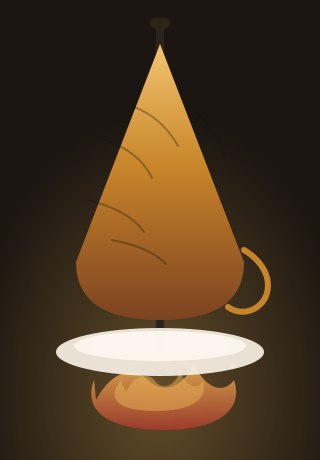

2004'ten beri aynı ocak, aynı usta, aynı mahalle.

Bu dükkân 2004'te bir usta, iki yardımcı ve bir tandırla açıldı. O günden beri aynı yerde, aynı ateşte döner. Etin kesiminden lavaşın açılmasına kadar hiçbir adım dışarıdan gelmiyor; akşam kapanıştan sonra tandır temizlenir, sabah ilk şiş o günün etiyle dizilir.
Dönerin sırrı tek bir şey değil: kıyımın inceliği, ateşin sabrı, lavaşın sıcaklığı. Biz üçünü de aynı gün içinde yapıyoruz.
“Ateşi acele ettirirsen döner yanar, beklersen erir. İkisi de aynı iş.” — Kurucu usta
Dana ve tavuk, günlük. Soğuk zincir bozulmaz, et dinlenmeden şişe dizilmez.
Odun ateşi, sabit sıcaklık. Dış çıtır, iç sulu; kıvamı buradan geliyor.
Günlük açılan lavaş. Bayat lavaş dürüme girmez.
Dürüm sıcak gelir, bekletilmez. Sipariş sıraya göre, ocaktan direkt çıkar.
Menüye bak, saatleri gör, telefonla sipariş ver. Akşam son şiş bitince ocak kapanır.